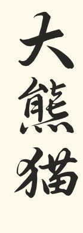
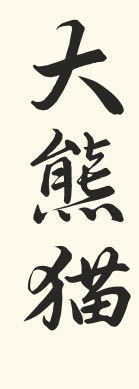
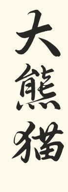

濒危动物是指所有由于物种自身的原因或受到人类活动或自然灾
害的影响，而有灭绝危险的野生动物物种，泛指珍贵、濒危或稀
有的野生动物。据估计，全世界生物物种的数量约有500万种，
已经有记载的约为 141.3万种。在近40年里，地球上动物种类灭
绝的速度，已经达到正常速度的100～1000 倍。其中，我国濒危
兽类和鸟的种类都排在前三名。近年来，我国濒危野生动物分布
日趋减少，种类数量每况愈下，处于灭绝边缘。我国生物多样性
资源十分丰富，但也是生物资源遭受破坏最严重的国家之一。由
于野生动物的栖息地丧失与破碎化加剧，过度利用导致资源接近
枯竭，伴随遗传多样性丧失及外来物种的入侵。
